A visited shop gets a sign beside its chest saying what happened. Light comes out only where money came in. The lid swings on its hinge (the front tilts away, the inside face comes up) and the hop moves like gravity.
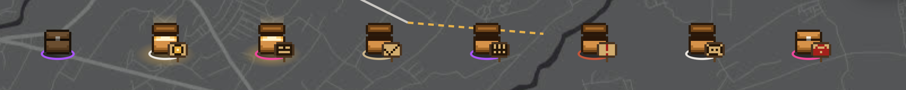
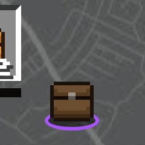
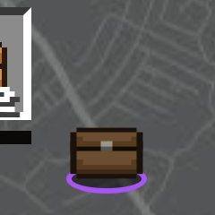
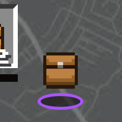
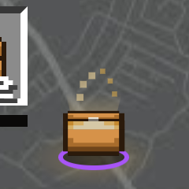
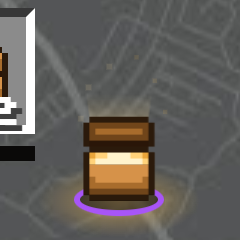
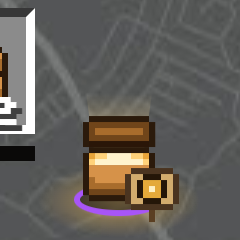
Measured every 20 ms: biggest move of the chest in one step 3.70 px, of the lid 5.61 px (no jump: a picture swap would move 6 px at once). Hop 9.0 px high, top at 260 ms; lid starts at 160 ms; sign appears at 560 ms; everything still by 720 ms.
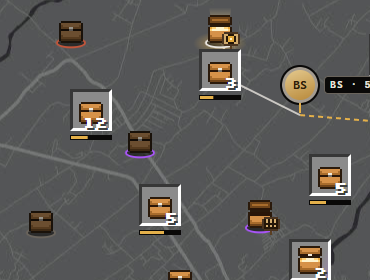
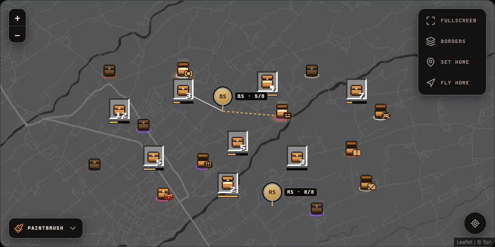
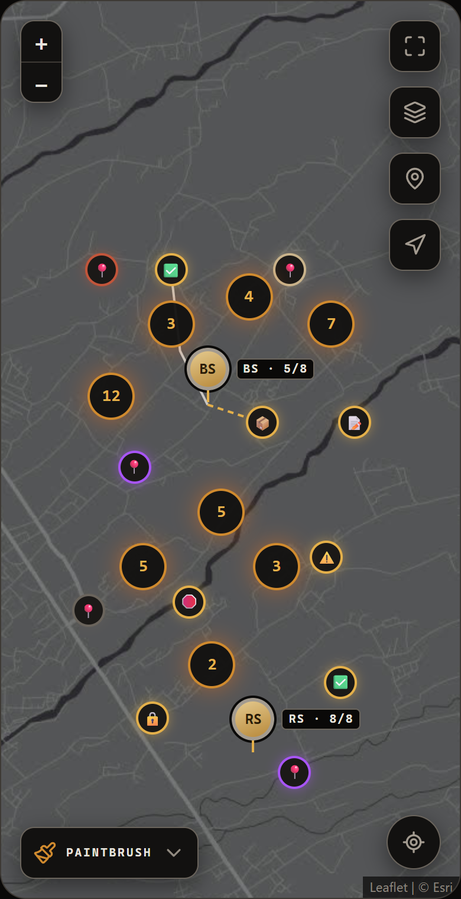
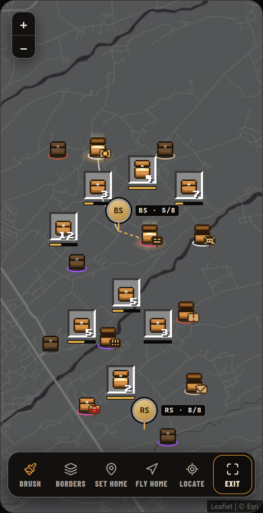